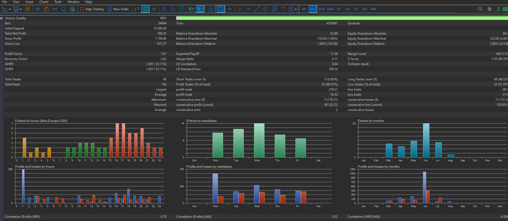
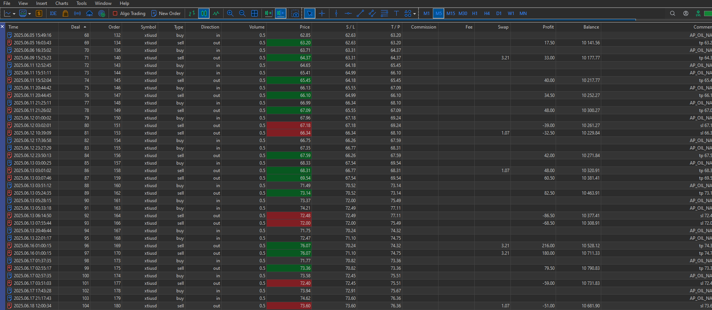
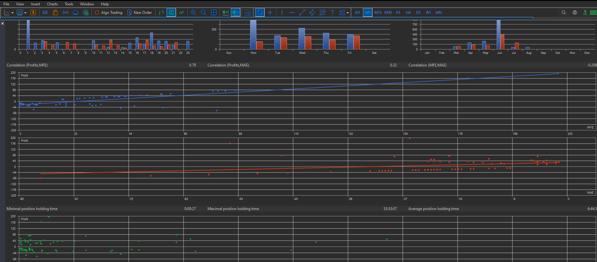
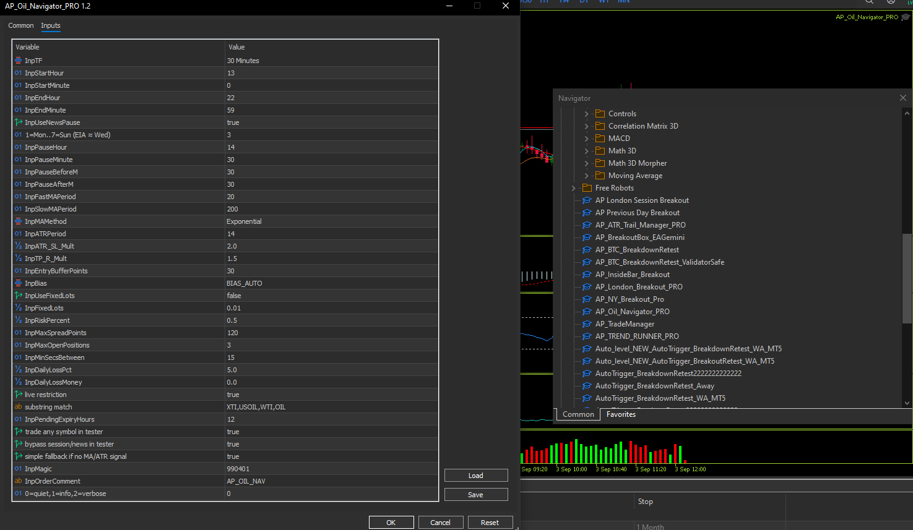

← Back to Home
AP Oil Navigator PRO (MT5)
Trend+pullback for XTIUSD/USOIL on M30 with ATR SL/TP, pending-order expiry, and validator-friendly safety gates.
What it does
- Signal on M30: fast/slow EMA trend + pullback breakout using prior bar high/low with entry buffer.
- ATR-based exits: SL = ATR × SL_Mult; TP = R-multiple of risk.
- Bias: auto (swap-aware) or forced long/short/both.
- Risk: fixed lots or % balance with point-value math and true min/step rounding.
- Safety: session window, optional news pause window, spread cap, daily loss guard.
- Order flow: one attempt per completed bar, one working pending at a time, pendings auto-expire.
- Validator-safe: live symbol restriction; tester allows any symbol + fallback entry if indicators not ready.
How it trades
- During the session window, on each new M30 bar the EA reads fast/slow EMA and optional ATR.
- If trend is up (fast>slow) it places a Buy Stop above previous bar high (+buffer). If down, a Sell Stop below previous low (–buffer).
- SL from ATR; TP by R-multiple. Stops are normalized to tick size and checked against broker stops level.
- Only one working pending is allowed; pendings expire after InpPendingExpiryHours.
- Daily equity guard pauses new orders after loss cap; spread & news/session gates must be OK.
Tester mode keeps logic but relaxes gates (optional) and enables a simple fallback entry if MA/ATR are not ready immediately.
Presets
Presets are plain text. Right-click “Save link as…” if your browser tries to open them.
Validator & safety notes
- No DLL/WebRequest. Uses OrderCheck, stops-level and margin checks before sending.
- Symbol guard in live accounts: only symbols containing the allowed tokens are traded (configurable).
- One attempt per completed bar; pending orders use ORDER_TIME_SPECIFIED for auto-expiry.
- All prices/lots normalized to broker tick size & step; pending prices and SL/TP respect stops/freeze.
Screenshots




Version
v1.2 — initial public release.